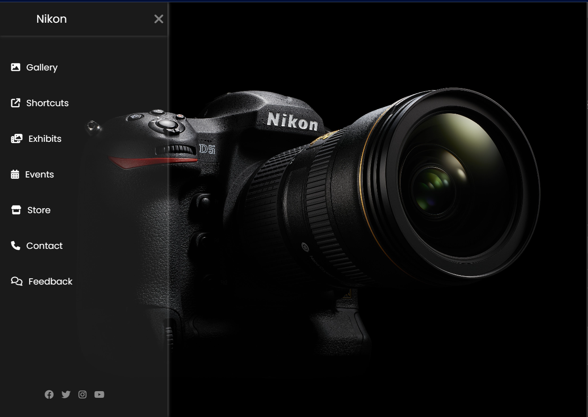

Hello
Coders !!
Coders !!
🚀 Welcome to my journey in the world of coding and development! 🚀
🪆 Web Development
💻 Problem Solving
About Me:
I am Gade Salini, a self-taught learner and a web developer. My passion for coding has been the driving force behind my journey in the vast realm of software development. I am deeply committed to honing my skills, pushing my limits, and contributing to the ever-evolving landscape of technology.Skills:
🚀 Self-Taught Learning🪆 Web Development
💻 Problem Solving
Contact:
📧 Email: salinigade23@gmail.comVision:
As a beginner web developer, I am excited about the possibilities that lie ahead. My goal is to continue learning, collaborating with like-minded individuals, and making a meaningful impact through my contributions to the world of software development.


© Gade Salini